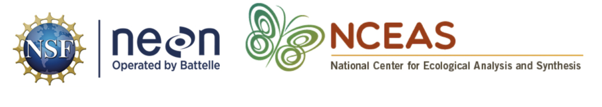
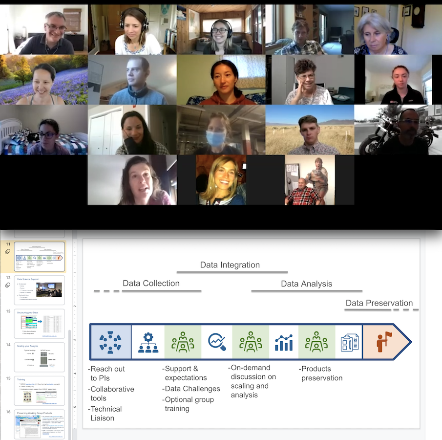
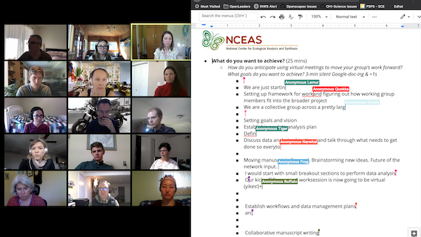
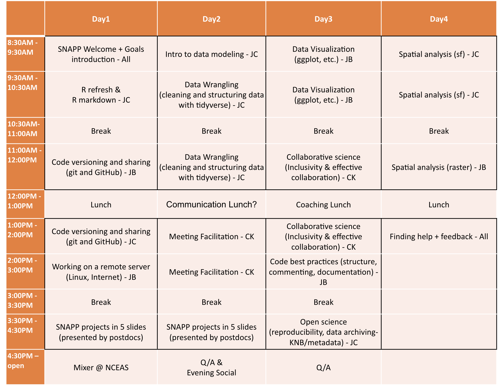
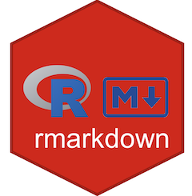

This course introduces graduate students to the reuse and preservation of envrionmental data.
This course introduces graduate students to conceptual organization of workflows as a way to conduct reproducible analyses
Promote the use of LTER datasets for teaching Data Science.

A self guided learning curricula to support new NEON Postdoctoral Fellows as part of their onboarding experience. The curricula builds from the experience of ecological researchers, trainers, developers and information managers to provide resources and training in support of collaborative, reproducible research practices.

An introduction to “good enough” practices to create a shared virtual environment allowing you to develop reproducible workflows for your analysis and manage your data.

The goal of thos workshop is to strengthen collaboration and facilitation skills in remote meetings for synthesis science using social and technical approaches that you can immediately implement with your tam.

This training, sponsored by the Science for Nature And People Partnership (SNAPP), aims to bring together the SNAPP and NCEAS postdoctoral associates to foster communities and collaboration, as well as promote scientific computing and open science best practices.

Making your work reproducible with Rmarkdown.
The primary goal of the Open Science for Synthesis - Gulf Research Program Workshop is to provide hands-on experience with contemporary open science tools from command line to data to communication. Team science is promoted. Practice and real data are used in groups to apply skills we explore.
A short introduction to rmarkdown and ggplot2
rmarkdown
ggplot2
A 4-day workshop to further develop scientific computing and open science best practices